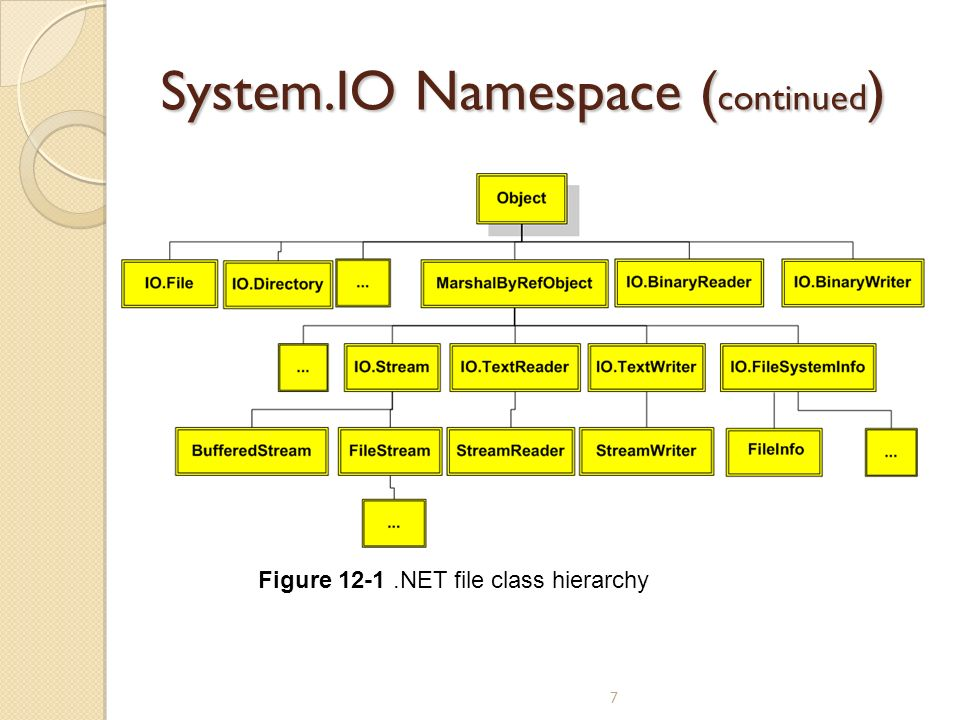
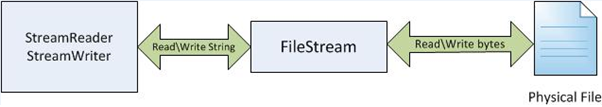

Manejo de archivos
Archivos y directorios, formatos, la librería System.IO, streams y las clases para leer y escribir.
Archivos y formatos
System.IO
Directory y File
Streams
FileStream
Reader / Writer

Directorios y archivos
Directorio
Un contenedor virtual que agrupa archivos y subdirectorios según un criterio.
Guarda información sobre los archivos que contiene: sus atributos y dónde están físicamente en el dispositivo.
Archivo
Una colección de datos con un nombre, guardada en almacenamiento secundario (disco magnético, óptico, electrónico…).
Persiste más allá de la ejecución del programa.
Texto plano vs binario
Texto plano (.txt)
Solo caracteres legibles por humanos: letras, números, signos, y algunos de control (tab, salto de línea).
Importa la codificación de caracteres (UTF-8, etc.).
legibleBinario
Información de cualquier tipo codificada en binario para almacenarse/procesarse.
Ejemplos: imágenes, texto formateado, ejecutables.
no legible directamenteFormatos de archivo
Un formato es un estándar que define cómo se organiza y codifica la información en el archivo.
Extensión
La convención usada para estructurar el archivo. <nombre>.jpg
Metadatos
Estructura de datos que permite interpretar el archivo (formato, dimensiones, fechas…).
Abiertos vs cerrados
Según si el estándar es público y libre, o propietario.
Cabecera, magic number y EOF
Además de la extensión, el formato se identifica con info dentro del archivo, normalmente al principio.
Header (cabecera)
Bloque al inicio con la info necesaria para tratar el archivo: formato, dimensiones, tamaño, compresión…
Magic number
Pocos bytes al comienzo de la cabecera que identifican el formato (firma).
EOF
End Of File: bytes que marcan el final del archivo.
Firmas de algunos formatos
Los primeros bytes en hexadecimal delatan el formato real, más allá de la extensión.
| Tipo | Cabecera (hex) | ASCII |
|---|---|---|
.PNG | 89 50 4E 47 | PNG |
.JPEG | FF D8 FF E0 | JFIF |
.GIF | 47 49 46 38 | GIF8 |
.PDF | 25 50 44 46 |
| Tipo | Cabecera (hex) | ASCII |
|---|---|---|
.ZIP | 50 4B 03 04 | PK |
.RAR | 52 61 72 21 | Rar! |
.EXE | 4D 5A | MZ |
ELF (Linux) | 7F 45 4C 46 | ELF |
Entrada/Salida en .NET
La E/S de archivos y secuencias es la transferencia de datos hacia o desde un medio de almacenamiento. En .NET, los espacios de nombre System.IO contienen los tipos para leer y escribir archivos y flujos, de forma sincrónica o asincrónica.
using System.IO; (o ya viene con ImplicitUsings).Clases principales
| Clase | Para qué |
|---|---|
File | Métodos estáticos: crear, copiar, borrar, mover y abrir archivos. |
FileInfo | Lo mismo pero con métodos de instancia. |
Directory | Métodos estáticos para crear, mover y enumerar directorios. |
DirectoryInfo | Igual, con métodos de instancia. |
Path | Procesar rutas de forma multiplataforma. |

Objeto Directory
| Método | Qué hace |
|---|---|
Exists(ruta) | Devuelve true/false según si el directorio existe. |
CreateDirectory(ruta) | Crea el directorio (y los intermedios). |
GetDirectories(ruta) | Lista los subdirectorios. |
GetFiles(ruta) | Lista los archivos dentro del directorio. |
GetLogicalDrives() | Obtiene los discos lógicos del sistema. |
Objeto File
| Método | Qué hace |
|---|---|
File.Exists(ruta) | Comprueba si el archivo existe. |
File.ReadAllText(ruta) | Lee todo el archivo y devuelve un string. |
File.ReadAllLines(ruta) | Lee todas las líneas a un string[]. |
File.WriteAllText / WriteAllLines | Escribe texto (crea o reemplaza). |
File.Copy / File.Delete | Copiar y eliminar archivos. |
¿Qué es un stream (flujo)?
Cuando un archivo es muy grande para cargarlo entero en memoria (o supera el ancho de banda disponible), se transfiere fragmentado en partes, de forma secuencial, de una fuente a un receptor.
Fuente → stream → destino
Fuente
RAM, disco, red, otro proceso…
Stream
Los datos viajan fragmentados, byte a byte.
Destino
RAM, disco, red, otro proceso…
Leer del stream
Los datos van de una fuente externa hacia el programa.
Escribir al stream
Los datos van del programa hacia una fuente externa.
Flujo de texto o de bytes
Flujo de texto
Secuencia de caracteres. Según el SO, cada línea puede terminar con \r\n. Para datos textuales.
Flujo binario
Secuencia de bytes. El contenido exacto se preserva sin importar la apariencia. Para datos no textuales.
La clase Stream
System.IO.Stream es una clase abstracta: define la vista común para transferir bytes. Todas las clases de flujo heredan de ella y aíslan al programador del SO y los dispositivos.
Lectura
Transferir datos del flujo a una estructura (ej. un arreglo de bytes).
Escritura
Transferir datos al flujo desde un origen.
Búsqueda
Consultar y mover la posición actual dentro del flujo (seek).
Según la clase concreta, se admiten todas o solo algunas de estas operaciones.
Tipos de Stream
FileStream
Lee/escribe bytes desde o hacia un archivo físico.
MemoryStream
Lee/escribe bytes almacenados en memoria.
BufferedStream
Envuelve otro stream para hacerlo más eficiente.
NetworkStream
Bytes desde/hacia un socket de red (IP + puerto).
PipeStream
Bytes entre procesos distintos.
CryptoStream
Vincula flujos a transformaciones criptográficas.
FileStream: propiedades y métodos
| Miembro | Qué indica / hace |
|---|---|
CanRead / CanWrite | Si admite lectura / escritura. |
CanSeek | Si admite búsquedas (mover la posición). |
Length | Longitud (tamaño) de los datos. |
Position | Posición actual dentro del flujo. |
Read(buffer, ini, n) | Lee bytes al buffer; avanza la posición. |
Seek(pos, origen) | Mueve la posición dentro del flujo. |

FileMode: cómo se abre
El enum FileMode
public enum FileMode { CreateNew, // crea; falla si existe Create, // crea o reemplaza Open, // abre existente OpenOrCreate, // abre o crea Truncate, // abre y vacía Append // abre y agrega al final }
Abrir un archivo
// con el constructor FileStream fs = new FileStream(ruta, FileMode.Open); // o con File.Open FileStream fs2 = File.Open(ruta, FileMode.Open);
Al terminar: fs.Close() libera el archivo (o usá using).
Leer bytes y convertir a texto
using (FileStream fs = new FileStream(ruta, FileMode.Open)) { byte[] buffer = new byte[128]; int leidos = fs.Read(buffer, 0, 128); // avanza Position // los bytes son binarios: para usarlos como texto, se convierten string texto = Encoding.UTF8.GetString(buffer, 0, leidos); fs.Seek(0, SeekOrigin.Begin); // volver al inicio } // el using cierra el stream y libera recursos
FileStream son bytes. Para tratarlos como texto se aplica una conversión con Encoding.Helpers para leer y escribir
Clases de más alto nivel que evitan trabajar con bytes a mano.
Texto
- StreamReader: lee caracteres de un flujo (convierte bytes → texto).
- StreamWriter: escribe cadenas a un flujo (texto → bytes).
Binario
- BinaryReader: lee tipos primitivos desde bytes.
- BinaryWriter: escribe tipos primitivos en binario.
Funcionan sobre cualquier stream (FileStream, MemoryStream, etc.).
Leer y escribir un archivo de texto
Lo simple: clase File
// crear el directorio si no existe if (!Directory.Exists(carpeta)) Directory.CreateDirectory(carpeta); // escribir y leer todo de una File.WriteAllLines(ruta, lineas); string[] leidas = File.ReadAllLines(ruta);
Con streams: StreamWriter / Reader
using (var sw = new StreamWriter(ruta)) sw.WriteLine("Hola archivo"); using (var sr = new StreamReader(ruta)) { string? l; while ((l = sr.ReadLine()) != null) Console.WriteLine(l); }
Repaso & ejercicios
En una línea
Usá File/Directory para lo simple, StreamReader/Writer para texto, y FileStream + Encoding cuando necesitás controlar los bytes.
Ejercicios
- Crear un directorio si no existe y un archivo dentro.
- Leer un CSV con nombre, apellido y edad.
- Con
FileStream, leer la etiqueta ID3 de un MP3.
Bibliografía
System.IO— docs.microsoft.com/dotnet/api/system.ioStream/FileStream— docs de .NET- Extensiones y cabeceras — welivesecurity.com